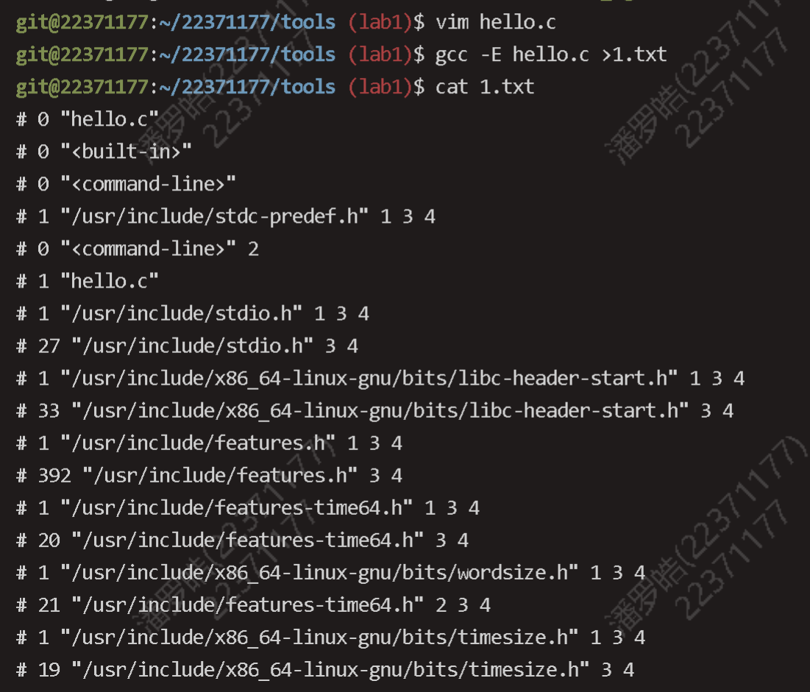
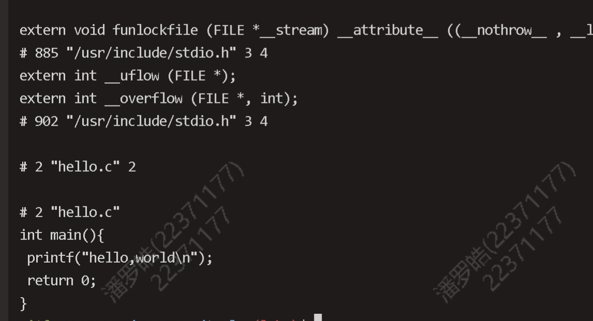
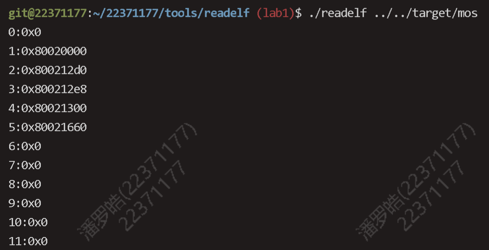
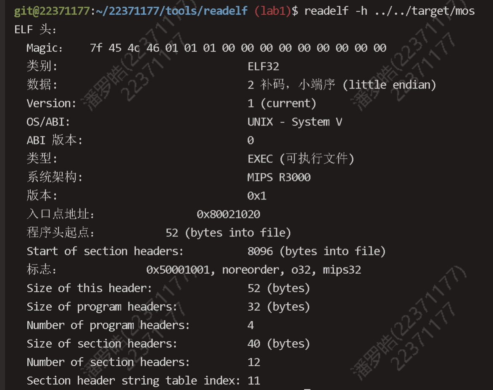
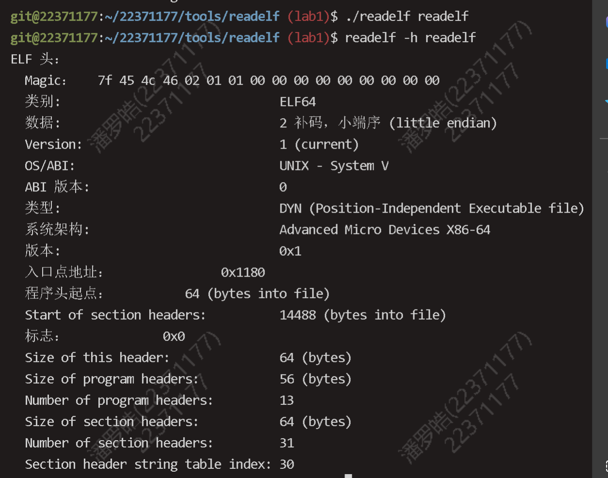

OS lab 1 实验报告
Thinking
Thinking 1.1
请阅读 附录中的编译链接详解，尝试分别使用实验环境中的原生 x86 工具链（gcc、ld、readelf、objdump 等）和 MIPS 交叉编译工具链（带有 mips-linux-gnu-前缀），重复其中的编译和解析过程，观察相应的结果，并解释其中向 objdump 传入的参数的含义。
objdump -DS 目标文件名 > 导出文件
常用参数
-D反汇编所有的节
-d,--disassemble：反汇编指定的代码段。-S：显示源代码和反汇编代码。-C：将 C++ 符号名逆向解析。-l：在反汇编代码中插入文件名和行号。-j section：仅反汇编指定的 section。


只进行预处理的结果如上


反汇编的结果如上
Thinking 1.2
思考下述问题：
• 尝试使用我们编写的 readelf 程序，解析之前在 target 目录下生成的内核 ELF 文件。
• 也许你会发现我们编写的 readelf 程序是不能解析 readelf 文件本身的，而我们刚才介绍的系统工具 readelf 则可以解析，这是为什么呢？（提示：尝试使用 readelf-h，并阅读 tools/readelf 目录下的 Makefile，观察 readelf 与 hello 的不同）
使用编写的readelf和系统工具readelf解读target 目录下生成的内核 ELF 文件

./readelf readelf 无法解析，系统工具可以解析

Thinking 1.3
在理论课上我们了解到，MIPS 体系结构上电时，启动入口地址为 0xBFC00000（其实启动入口地址是根据具体型号而定的，由硬件逻辑确定，也有可能不是这个地址，但一定是一个确定的地址），但实验操作系统的内核入口并没有放在上电启动地址，而是按照内存布局图放置。思考为什么这样放置内核还能保证内核入口被正确跳转到？（提示：思考实验中启动过程的两阶段分别由谁执行。）
bootloader 可以将内核可执行文件拷贝到内存中，将控制权转交给操作系统，因此不必把内核入口放在上电启动位置。
我们在kernel.lds种设置好了各个节被加载的位置，同时使用了ENTRY（_start）指定了程序入口，保证了能正确跳转到内核入口。
Exercise
Exercise 0.1
Elf32_Ehdr *ehdr = (Elf32_Ehdr *)binary;
// Check whether `binary` is a ELF file.
if (!is_elf_format(binary, size)) {
fputs("not an elf file\n", stderr);
return -1;
}
// Get the address of the section table, the number of section headers and the size of a
// section header.
const void *sh_table;
Elf32_Half sh_entry_count;
Elf32_Half sh_entry_size;
/* Exercise 1.1: Your code here. (1/2) */
sh_table = binary + ehdr -> e_shoff; //不能使用ehdr来加，因为是指针加法
sh_entry_count = ehdr-> e_shnum;
sh_entry_size = ehdr->e_shentsize;
// For each section header, output its index and the section address.
// The index should start from 0.
for (int i = 0; i < sh_entry_count; i++) {
const Elf32_Shdr *shdr;
unsigned int addr;
/* Exercise 1.1: Your code here. (2/2) */
shdr =( Elf32_Shdr*) (sh_table + i*sh_entry_size);
addr = shdr->sh_addr;
printf("%d:0x%x\n", i, addr);
}
Exercise 0.2
/* Step 1: Set the loading address of the text section to the location counter ".". */
/* Exercise 1.2: Your code here. (1/4) */
. = 0x80020000;
/* Step 2: Define the text section. */
/* Exercise 1.2: Your code here. (2/4) */
.text : { *(.text) }
/* Step 3: Define the data section. */
/* Exercise 1.2: Your code here. (3/4) */
.data : { *(.data) }
bss_start = .;
/* Step 4: Define the bss section. */
/* Exercise 1.2: Your code here. (4/4) */
.bss : { *(.bss) }
bss_end = .;
. = 0x80400000;
end = . ;
Exercise 0.3
clear_bss_done:
/* disable interrupts */
mtc0 zero, CP0_STATUS
/* hint: you can refer to the memory layout in include/mmu.h */
/* set up the kernel stack */
/* Exercise 1.3: Your code here. (1/2) */
li sp , 0x80400000
/* jump to mips_init */
/* Exercise 1.3: Your code here. (2/2) */
j mips_init
Exercise 0.4
略
本次实验分析
我认为本次实验的第一个难点是elf文件结构的理解。一定要注意 节，节头表，节头表表项的区别。从我个人的理解来看（不一定正确）：
- 节（Section）：文件中的一个区块，包含了代码或数据。
- 节头表（Section Header Table）：是一个数组，其中每个元素都是一个节头表表项。
- 节头表表项（Section Header Table Entry）：这是节头表中的一个元素，描述了单个节的属性，可以得到对应节的信息，比如地址和相对文件的偏移。
第二个难点是printk的层层调用实现
// in kern/printk.c
/* Lab 1 Key Code "outputk" */
void outputk(void *data, const char *buf, size_t len) {
for (int i = 0; i < len; i++) {
printcharc(buf[i]);
}
}
/* End of Key Code "outputk" */
/* Lab 1 Key Code "printk" */
void printk(const char *fmt, ...) {
va_list ap;
va_start(ap, fmt);
vprintfmt(outputk, NULL, fmt, ap);
va_end(ap);
}// in lib/print.c
void vprintfmt(fmt_callback_t out, void *data, const char *fmt, va_list ap) {
char c;
const char *s;
long num;
int width;
int long_flag; // output is long (rather than int)
int neg_flag; // output is negative
int ladjust; // output is left-aligned
char padc; // padding char
·······
//内部利用out进行输出
}// in kern/machine.c
void printcharc(char ch) {
if (ch == '\n') {
printcharc('\r');
}
while (!(*((volatile uint8_t *)(KSEG1 + MALTA_SERIAL_LSR)) & MALTA_SERIAL_THR_EMPTY)) {
}
*((volatile uint8_t *)(KSEG1 + MALTA_SERIAL_DATA)) = ch;
}printk->vprintfmt->outputk->printcharc
outputk在我看来相当于一种输出的方法策略，可以作为函数指针传给主要的处理方法，也可以更换函数，实现不同的输出，data是为不同方法保留的，可能是为了拓展性（？
体会与感想
lab1课下实现不难，要整体对操作系统的启动和运行有个印象。
上机的exam不难，只要略作修改即可，读到%p，输出后两个整数a,b,和（a-b)*(a+b)；
extra部分需要实现scanf，类似printf，不过实现的细节要少很多，我没通过的原因主要是不知道vim是可以粘贴的（不知道哪里来的印象，甚至没有去试），以及不够细心，在%c额外往后读取了一位，一直没有发现，而且不知道应该如何调试，只是肉眼在debug，最后发现的时候处于冷却没办法提交······后面还需要对这些多尝试。
如果您喜欢此博客或发现它对您有用，则欢迎对此发表评论。 也欢迎您共享此博客，以便更多人可以参与。 如果博客中使用的图像侵犯了您的版权，请与作者联系以将其删除。 谢谢 ！